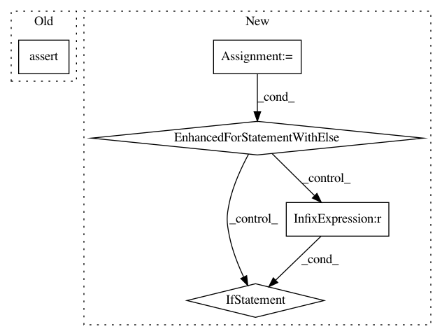

f2248a7b41dc0ab56486a5e9cab35afda227a4e9,nisl/decomposition/tests/test_canica.py,,test_canica_square_img,#,7
Before Change
component2.ravel() != 0)
assert_array_equal(np.abs(maps[2]) > np.abs(maps[2]).max() * 0.95,
component3.ravel() != 0)
assert_array_equal(np.abs(maps[1]) > np.abs(maps[1]).max() * 0.95,
component1.ravel() != 0)
assert_array_equal(np.abs(maps[3]) > np.abs(maps[3]).max() * 0.95,
component4.ravel() != 0)
After Change
for i in range(4):
map = np.abs(maps[i]) > np.abs(maps[i]).max() * 0.95
for j in indices:
ref_map = components[j].ravel() != 0
if np.all(map == ref_map):
indices.remove(j)
break;
else:
assert False, "Non matching component"
if __name__ == "__main__":
test_canica_square_img()
In pattern: SUPERPATTERN
Frequency: 3
Non-data size: 5
Instances
Project Name: nilearn/nilearn
Commit Name: f2248a7b41dc0ab56486a5e9cab35afda227a4e9
Time: 2013-03-12
Author: abraham.alexandre@gmail.com
File Name: nisl/decomposition/tests/test_canica.py
Class Name:
Method Name: test_canica_square_img
Project Name: dask/distributed
Commit Name: c94cde1f7f5bc06ae57a303f7345635e323dad21
Time: 2019-02-12
Author: mrocklin@gmail.com
File Name: distributed/tests/test_worker.py
Class Name:
Method Name: test_statistical_profiling_cycle
Project Name: stanford-mast/nn_dataflow
Commit Name: 26ead28f5a920e1a5ee5f11f5f0a44d3ce50e7ba
Time: 2017-09-14
Author: mgao12@stanford.edu
File Name: nn_dataflow/core/inter_layer_pipeline.py
Class Name: InterLayerPipeline
Method Name: _calc_sched_dag